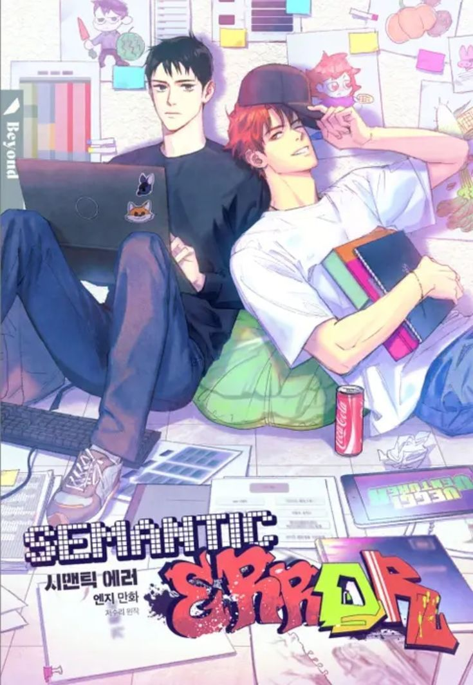

¡Bienvenido a Manga Web! Aquí encontrarás recomendaciones destacadas de mangas para disfrutar. Explora nuevas historias y emocionantes aventuras.
Recomendaciones del Mes:
Shujinkou Nikki
Aoi Tsujimura es una estudiante de preparatoria un poco antisocial A ella siempre la comparan con su madre, quien es una popular artista de manga shojo, y con su hermano mayor Itsuki Tsujimura, quien es bueno en los deportes y es popular en la escuela Comparado con eso, ella cree tener una personalidad muy poco interesante debido a eso tiene baja autoestima Pero su hermano la ayudará a ella para que pueda cambiar y tenga más confianza en si misma Cómo? ustedes dirán bueno su hermano mayor tiene un apuesto amigo, Mizusawa Sena, quien sugirió que ella debía enamorarse para poder tener más confianza en si misma, y por casualidades de la vida, él está en la misma clase que ella, y no trata a Aoi como sus demás compañeros la tratan...
Genero:Romance, Shoujo, Escolar
Autora:Yuu Yoshinaga.
Donde leer:
Semantic Error
"Semantic Error" sigue la historia de Chu Sangwoo, un estudiante universitario de ciencias de la computación que es perfeccionista y riguroso con las reglas. En un proyecto grupal, Sangwoo decide presentar el trabajo solo después de que sus compañeros no contribuyan, lo que afecta negativamente a Jang Jaeyoung, un estudiante de diseño gráfico que no puede graduarse debido a esto. Jaeyoung, el chico más popular de la escuela, decide vengarse de Sangwoo, pero a medida que pasan más tiempo juntos, sus intenciones cambian y comienzan a desarrollar sentimientos mutuos. La serie explora su relación, pasando de enemigos a amantes, en un contexto de comedia y romance.

Genero:Romance, Enemies to lovers, Vida Escolar, Comedia.
Autora:Jeosuri.
Donde leer:

.png)